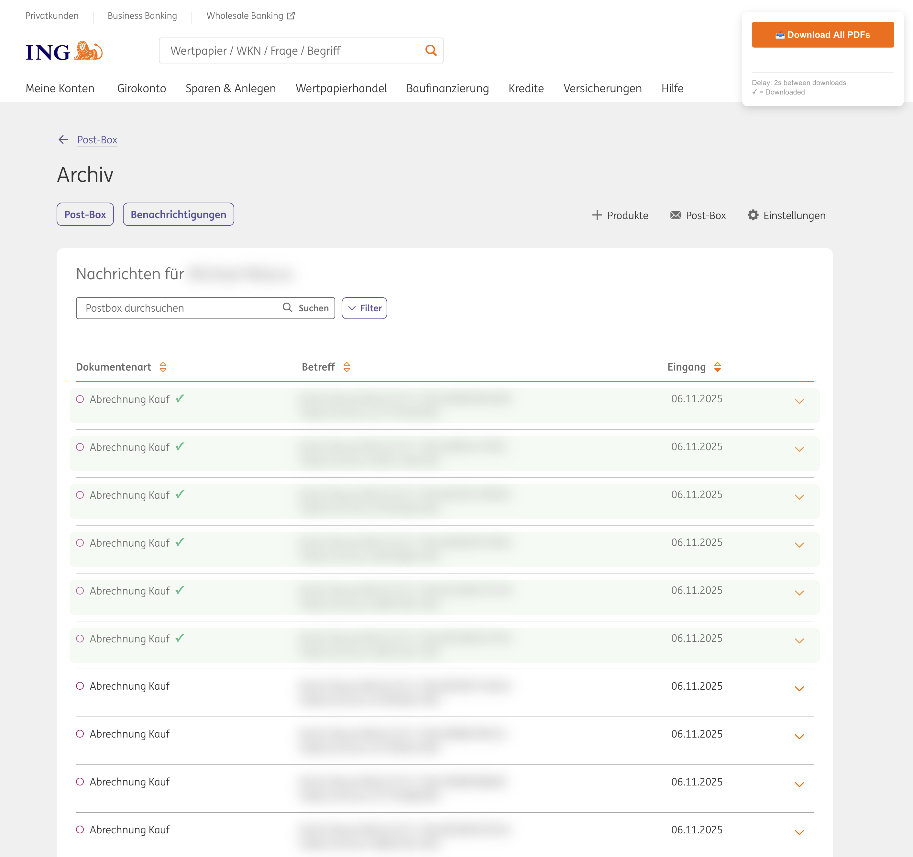

A Tampermonkey userscript that safely downloads all PDFs from ING Postbox Archive with rate limiting.
Features:
- Batch downloads PDFs from ING banking postbox archives
- 2-second delays between downloads to prevent rate limiting
- Fixed UI panel with download controls
- Visual tracking with checkmarks for processed files
- Abort functionality to stop ongoing downloads
View on GitHub Gist
